|
The GRAM Programmer's Manual
|
This documents the class structure of the GRAM C++ framework. Since all GRAM models are built around this framework, the contents are apropos for each model. When refering to a model specific class or item, simply replace Body with the model of choice (e.g. NeptuneAtmosphere for BodyAtmosphere).
A program which uses a GRAM atmospheric model will consist of three components.
The common framework consists of code that is shared by the body specific GRAM models. This includes elements such as output routines, input parsers, data structures, utilities, atmospheric data models, and common formulations. Conceptually bundled into the common framework are the NAIF SPICE routines as the ephemeris computations are the same for all bodies. The interface classes within the common framework are described in the C++ interface section of this document.
Each of the atmospheric models contains body specific data and code. A program must contain at least one body specific component. However, a program may utilize any number of body specific components. The interface class within a body specific component will be named BodyAtmosphere.
The remaining component is the controlling main program. In the simplest form, a simulation need only interface with a BodyAtmosphere class. In that form, the controller is responsible for setting all parameters, providing the input positions, calling the update cycle, and managing the outputs. The common framework also provides classes that will help a controller read parameter files, generate inputs, manage the update cycle, and generate output files.
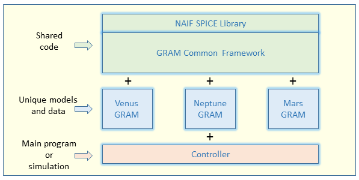
Each body atmosphere model provides a BodyGRAM program (NeptuneGRAM, MarsGRAM, etc.). Please refer to the Body-GRAM user's Guide to become familiar with the operation of this program. This section will document the relationship of the interface classes used in the BodyGRAM program.
In the class relationship diagrams below, the orange shaded classes are instantiated within the BodyGRAM program. The MonteCarlo class requires a Profile, a ProfilePrinter, and an InputParameters object. In this case, Profile is a polymorphic handle to a Trajectory object. InputParameters is a polymorphic handle to a BodyInputParameters object. And ProfilePrinter is a polymorphic handle to BodyProfilePrinter. The polymorphism allows the MonteCarlo class to operate with all GRAM body classes.
The Trajectory class requires a PerturbedAtmosphere and an InputParameters class. Both are polymorphic handles to the body specific classes BodyAtmosphere and BodyInputParameters.
The BodyInputParameters are acquired by the BodyNamelistReader class. This class, which inherits NamelistReader, is responsible for parsing a namelist file and populating a BodyInputParameters object. The inputs are passed to the MonteCarlo object which, in turn, passes them on to the Trajectory and BodyAtmosphere objects.
The MonteCarlo object generates a number of Trajectory profiles, passing the results of each to the ProfilePrinter. The Trajectory object calls the BodyAtmosphere for updates to each position in the trajectory.
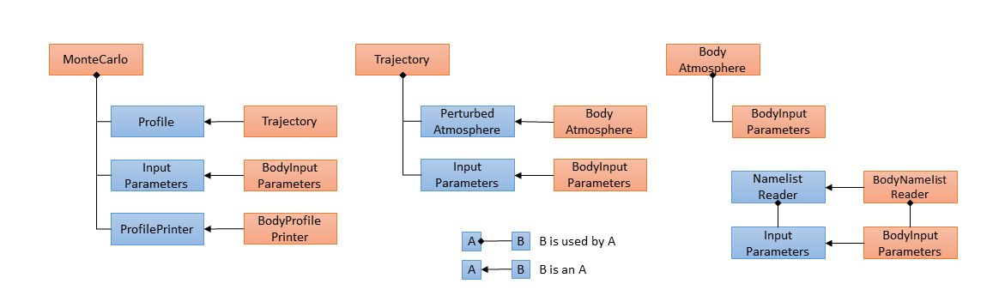
Class references: MonteCarlo, Trajectory, Profile, ProfilePrinter, InputParameters, PerturbedAtmosphere, NamelistReader
Each body atmosphere model contains a BodyAtmosphere class. The BodyAtmosphere class is a controller class. That is, it typically does not perform the atmospheric computations, but rather coordinates and delegates these computations to other classes.
In an update cycle, the BodyAtmosphere will:
Given the operations above, a BodyAtmophere class owns one or more BodyModel objects. The BodyModel classes, detailed in the next section, are subclasses of the Atmosphere class. They are responsible for populating an AtmosphereState given a Position and EphemerisState.
The BodyAtmophere class inherits the abstract PerturbedAtmosphere class so that it can perform atmospheric perturbations. The PerturbedAtmosphere class inherits from the abstract Atmosphere class. This facilitates the update of the AtmosphereState and EphemerisState classes. It also inherits the AuxiliaryAdapter so that it may own one or more AuxiliaryAtmospheres. The BodyAtmophere class also inherits the BodyCommon class which will initialize important body-specific constants. The BodyModel classes also typically inherit the same BodyCommon class so that they all share the same constants.
In the class relationship diagram below, orange shaded classes are those that inherit the Atmosphere class.
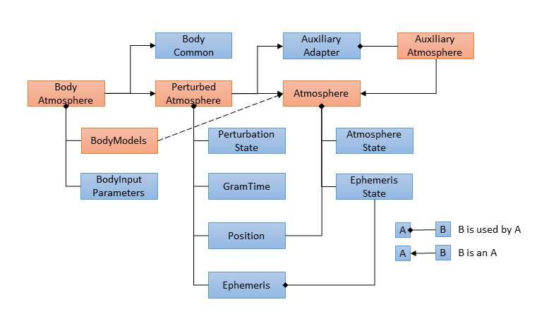
Class references: PerturbedAtmosphere, Atmosphere, AuxiliaryAtmosphere, AuxiliaryAdapter, AtmosphereState, EphemerisState, Ephemeris, Position, GramTime
The class name BodyModel used in this section actually refers to a number of class names that match no specific pattern other than having the body name as prefix. The BodyModel classes are responsible for populating an AtmosphereState given a Position and EphemerisState. A class can be identified as a BodyModel class if it inherits the Atmosphere class directly or via one of the common DataModel classes. All BodyModel classes will also inherit a BodyCommon class which will initialize important body-specific constants.
In its simplest form, a BodyModel class inherits the abstract Atmosphere class directly. In this case, the BodyModel class must supply an update method. This form tends to be used when the update method does not easily abstract into a generic base class.
In many cases, the BodyModel class inherits a common DataModel (HeightModel, MinMaxModel). The DataModel classes provide generic data structures and algorithms for building an atmospheric model. Typically, BodyModel need only provide the body-specific winds models and atmospheric data if a DataModel is utilized.
In some cases, the BodyModel class relies on other BodyModel classes for partial computations of the AtmosphereState. One example would be if a LowModel, MidModel, and HighModel each returned metrics for a layer of the atmosphere. In this case, a BodyModel might use all three layer models and perform a smoothing of results between layers. The TitanGCM class is an example of such a BodyModel class.
In the class relationship diagram below, orange shaded classes are those that inherit the Atmosphere class.
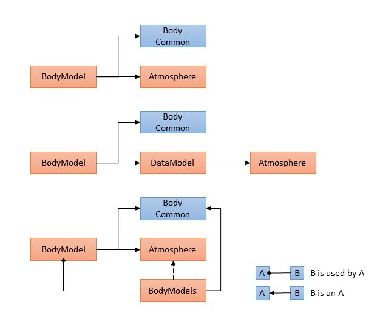
Class references: Atmosphere, HeightModel, MinMaxModel, AtmosphereState, EphemerisState, TitanGCM
The VenusAtmosphere class inherits the PerturbedAtmosphere and VenusCommon classes. It uses the VenusModel class for computing the mean (unperturbed) atmosphere state.
The VenusIRA class uses four layer models, fairing values between the layers. From low to high, the models are VenusIRALow, VenusIRAMid, VenusIRAHigh, and VenusIRAThermos.
The VenusTopography class computes surface heights using the Topography base class.
In the class relationship diagram below, orange shaded classes are those specific to the Venus model.
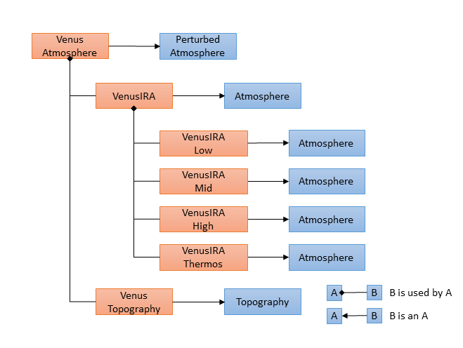
Class references: VenusAtmosphere, PerturbedAtmosphere, VenusIRA, VenusIRALow, VenusIRAMid, VenusIRAHigh, VenusIRAThermos, VenusTopography, Topography, Atmosphere, VenusCommon
The EarthAtmosphere class inherits the PerturbedAtmosphere and EarthCommon classes. It uses the EarthModel class for computing the mean (unperturbed) atmosphere state. It also uses the RRA class to fair between the EarthModel values and Ranged Reference Atmosphere values.
The EarthModel class uses three layer models, fairing values between the layers. From low to high, the models are NCEP, MAP, and a choice of one of three thermosphere models. The three thermosphere models are the MET, MSIS, and JB2008. The MSIS and JB2008 thermosphere models use the HWM class to compute horizontal winds.
In the class relationship diagram below, orange shaded classes are those specific to the Earth model.
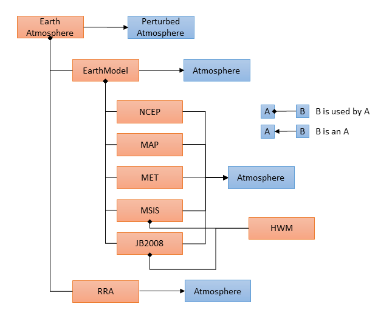
Class references: EarthAtmosphere, PerturbedAtmosphere, EarthModel, RRA, NCEP, MAP, MET, MSIS, JB2008, HWM, Atmosphere, EarthCommon
The MarsAtmosphere class inherits the PerturbedAtmosphere and MarsCommon classes. It uses the MarsGCM class for computing the mean (unperturbed) atmosphere state. It also uses the SlopeWindsModel class for winds and the MOLATopography class for topographic height and albedo.
The MarsGCM class coordinates the user selection of one of two atmosphere models computed by the MGCM and TesGCM classes. The StewartModel class is used for thermosphere computations and if faired with the lower atmosphere models.
The MGCM and TesGCM classes both inherit the MarsGCMBase class which contains the bulk of the GCM model. The MarsGCMBase class uses three layers of data models, fairing between them. The MGCM and TesGCM classes each have a dust model for computing the dust optical depth.
The data classes used by the MGCM class include the MGCMSurfaceInterpolator, MGCMLowerInterpolator, and MGCMUpperInterpolator classes for the atmosphere layers and the MGCMDustModel class for the dust model. The three interpolator classes inherit from the MGCMInterpolator class.
The data classes used by the TesGCM class include the TesSurfaceInterpolator, TesLowerInterpolator, and TesUpperInterpolator classes for the atmosphere layers and the TesDustModel class for the dust model. The three interpolator classes inherit from the TesInterpolator class.
The interpolator classes for each model differ primarily in data dimensions with indices computed in the MGCMInterpolator and TesInterpolator classes. These both inherit the MarsInterpolatorBase class which computes tidal values and reads binary data files.
The MGCMDustModel and TesDustModel classes inherit the MarsDustModelBase. This base class computes a dust storm intensity factor.
In the class relationship diagram below, orange shaded classes are those specific to the Mars model.
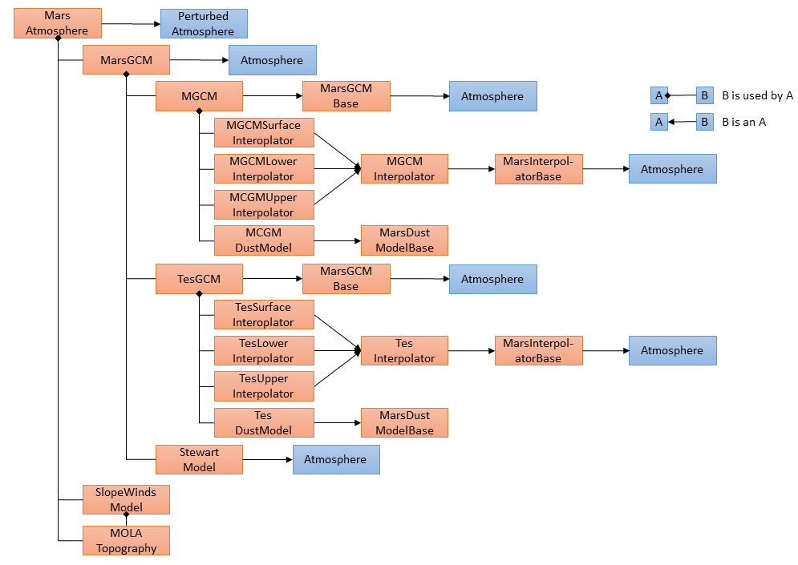
Class references: MarsAtmosphere, PerturbedAtmosphere, MarsGCM, SlopeWindsModel, MOLATopography, MGCM, TesGCM, StewartModel, MarsGCMBase, MarsInterpolatorBase, MGCMInterpolator, MGCMSurfaceInterpolator, MGCMLowerInterpolator, MGCMUpperInterpolator, TesInterpolator, TesSurfaceInterpolator, TesLowerInterpolator, TesUpperInterpolator, MarsDustModelBase, MGCMDustModel, TesDustModel, Atmosphere, MarsCommon
The JupiterAtmosphere class inherits the PerturbedAtmosphere and JupiterCommon classes. It uses the JupiterModel class for computing the mean (unperturbed) atmosphere state.
The JupiterModel class inherits the HeightModel class. The HeightModel class uses a single height-based profile to determine pressure, density, temperature, and constituent gas densities. At this time, latitudes, longitudes, and ephemerides play no part in the computational model.
In the class relationship diagram below, orange shaded classes are those specific to the Uranus model.
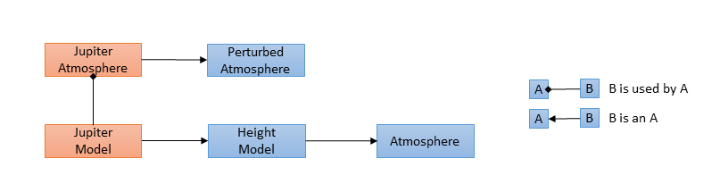
Class references: JupiterAtmosphere, PerturbedAtmosphere, JupiterModel, HeightModel, Atmosphere, JupiterCommon
The UranusAtmosphere class inherits the PerturbedAtmosphere and UranusCommon classes. It uses the UranusModel class for computing the mean (unperturbed) atmosphere state.
The UranusModel class inherits the HeightModel class. The HeightModel class uses a single height-based profile to determine pressure, density, temperature, and constituent gas densities. At this time, latitudes, longitudes, and ephemerides play no part in the computational model.
In the class relationship diagram below, orange shaded classes are those specific to the Uranus model.
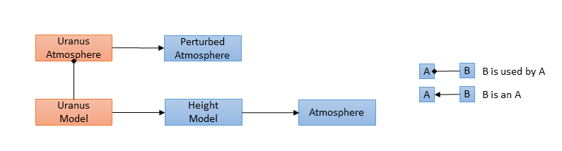
Class references: UranusAtmosphere, PerturbedAtmosphere, UranusModel, HeightModel, Atmosphere, UranusCommon
The NeptuneAtmosphere class inherits the PerturbedAtmosphere and NeptuneCommon classes. It uses the NeptuneMinMax class for computing the mean (unperturbed) atmosphere state.
The NeptuneMinMax class inherits the MinMaxModel class. The MinMaxModel class uses three height-based profiles to build a global model. The minimum, mean, and maximum profiles are interpolated using a minMaxFactor. This factor is computed based on ephemeris values and latitudes.
In the class relationship diagram below, orange shaded classes are those specific to the Neptune model.
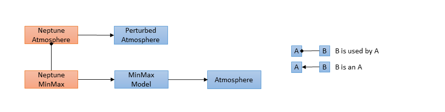
Class references: NeptuneAtmosphere, PerturbedAtmosphere, NeptuneMinMax, MinMaxModel, Atmosphere, NeptuneCommon
The TitanAtmosphere class inherits the PerturbedAtmosphere and TitanCommon classes. It uses the Yelle and TitanGCM classes for computing the mean (unperturbed) atmosphere state.
The Yelle class inherits the MinMaxModel class. The MinMaxModel class uses three height-based profiles to build a global model. The minimum, mean, and maximum profiles are interpolated using a minMaxFactor. This factor is computed based on ephemeris values and latitudes.
The TitanGCM class fairs between states computed in the TitanGCMTerp, TitaGCMMid, and TitanGCMThermos classes. The TitanGCMTerp class computes states from the surface to the 0.3 mbar level. The 0.3 mbar to 925 km range is computed with the TitanGCMMid class. Above 925 km is computed by the TitanGCMThermos class.
In the class relationship diagram below, orange shaded classes are those specific to the Titan model.
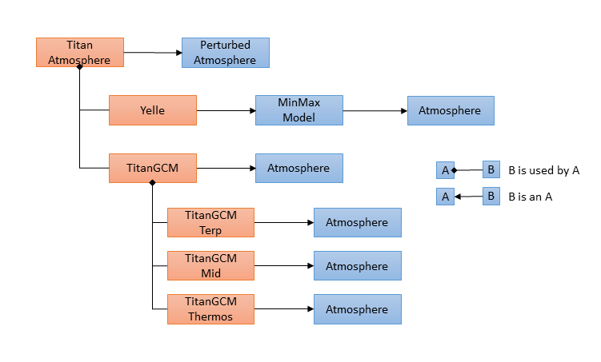
Class references: TitanAtmosphere, PerturbedAtmosphere, Yelle, MinMaxModel, TitanGCM, TitanGCMTerp, TitanGCMMid, TitanGCMThermos, Atmosphere, TitanCommon
The AtmosphereState class is the primary data container for the Atmosphere class. It inherits the AtmosphereStateBase class which contains data used by all Atmosphere classes and subclasses such as pressure, density, and temperature. The AtmosphereState class also contains a Many object call plantarySpecificMetrics for metrics not found in the common base.
The Many class defines a variant object. For EarthAtmosphere, it contains an EarthAtmosphereState. For MarsAtmosphere, it contains a MarsAtmosphereState. Each of the body specific state classes contains metrics not used by the common model. The AtmosphereState class contains access methods for the planetarySpecificMetrics.
It is important to note that the set method passes and stores a reference to the original object. So in the example above, tempAtmos and earthAtmos refer to the same object. Typically, the BodyAtmosphereState is a member of the BodyAtmosphere and referenced by the AtmosphereState within that class. Copying an AtmosphereState will result in the values of the planetarySpecificMetrics being copied. Also note that since templates cannot divine a return type, the get call must supply the return type.
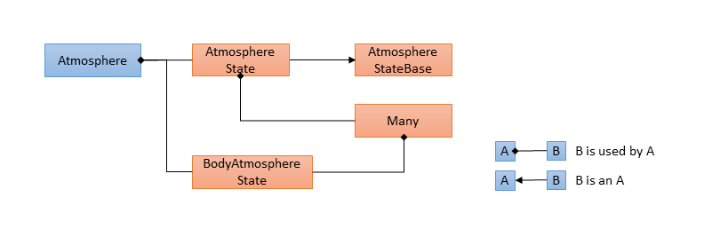
Class references: AtmosphereState, AtmosphereStateBase, Many, Atmosphere
The Earth atmosphere model provides the EarthCorrMonte program (potential for other planets in the future). Please refer to the Earth-GRAM User's Guide to become familiar with the operation of this program. This section will document the relationship of the interface classes used in the BodyCorrMonte program (true for any body).
In the class relationship diagrams below, the orange shaded classes are instantiated within the BodyCorrMonte program. The CorrMonte class requires a StateCorrelator, a Profile, a ProfilePrinter, and an InputParameters object. In this case, StateCorrelator is a polymorphic handle to a BodyStateCorrelator object. Profile is a polymorphic handle to a Trajectory object. InputParameters is a polymorphic handle to a BodyInputParameters object. And ProfilePrinter is a polymorphic handle to BodyProfilePrinter. The polymorphism allows the CorrMonte class to operate with all GRAM body classes.
The StateCorrelator class uses the Position and AtmosphereState classes. In short, for given base and target Positions the target AtmosphereState is correlated to the base AtmosphereState.
The Trajectory class requires a PerturbedAtmosphere and an InputParameters class. Both are polymorphic handles to the body specific classes BodyAtmosphere and BodyInputParameters. The BodyInputParameters are acquired by the BodyNamelistReader class as in the BodyGRAM program.
The CorrMonte object generates a number of Trajectory profiles, passing the results of each to the ProfilePrinter. The Trajectory object calls the BodyAtmosphere for updates to each position in the trajectory.
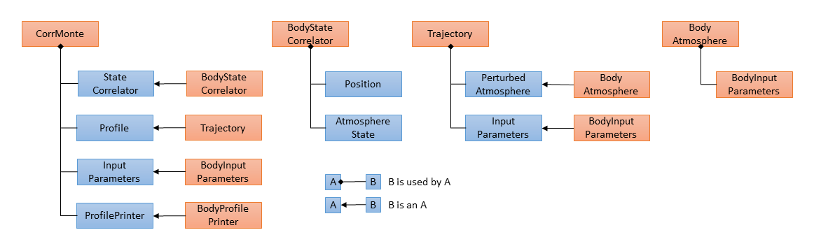
Class references: CorrMonte, StateCorrelator, Trajectory, Profile, ProfilePrinter, InputParameters, PerturbedAtmosphere, NamelistReader
The Earth atmosphere model provides the EarthCorrTraj program (potential for other planets in the future). Please refer to the Earth-GRAM User's Guide to become familiar with the operation of this program. This section will document the relationship of the interface classes used in the BodyCorrTraj program (true for any body).
In the class relationship diagrams below, the orange shaded classes are instantiated within the BodyCorrTraj program. The MonteCarlo class requires a Profile, a ProfilePrinter, and an InputParameters object. In this case, Profile is a polymorphic handle to a BallisticTrajectory object. InputParameters is a polymorphic handle to a BodyInputParameters object. And ProfilePrinter is a polymorphic handle to BodyProfilePrinter. The polymorphism allows the CorrMonte class to operate with all GRAM body classes.
The BallisticTrajectory class requires a StateCorrelator, a PerturbedAtmosphere and an InputParameters class. All are polymorphic handles to the body specific classes: BodyStateCorrelator, BodyAtmosphere, and BodyInputParameters. The BodyInputParameters are acquired by the BodyNamelistReader class as in the BodyGRAM program.
The StateCorrelator class uses the Position and AtmosphereState classes. In short, for given base and target Positions the target AtmosphereState is correlated to the base AtmosphereState.
The MonteCarlo object generates a number of Trajectory profiles, passing the results of each to the ProfilePrinter. The Trajectory object calls the BodyAtmosphere for updates to each position in the trajectory.
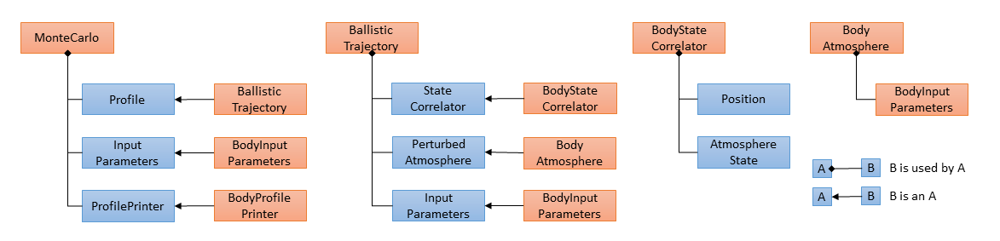
Class references: MonteCarlo, StateCorrelator, BallisticTrajectory, Profile, ProfilePrinter, InputParameters, PerturbedAtmosphere, NamelistReader
1.8.17